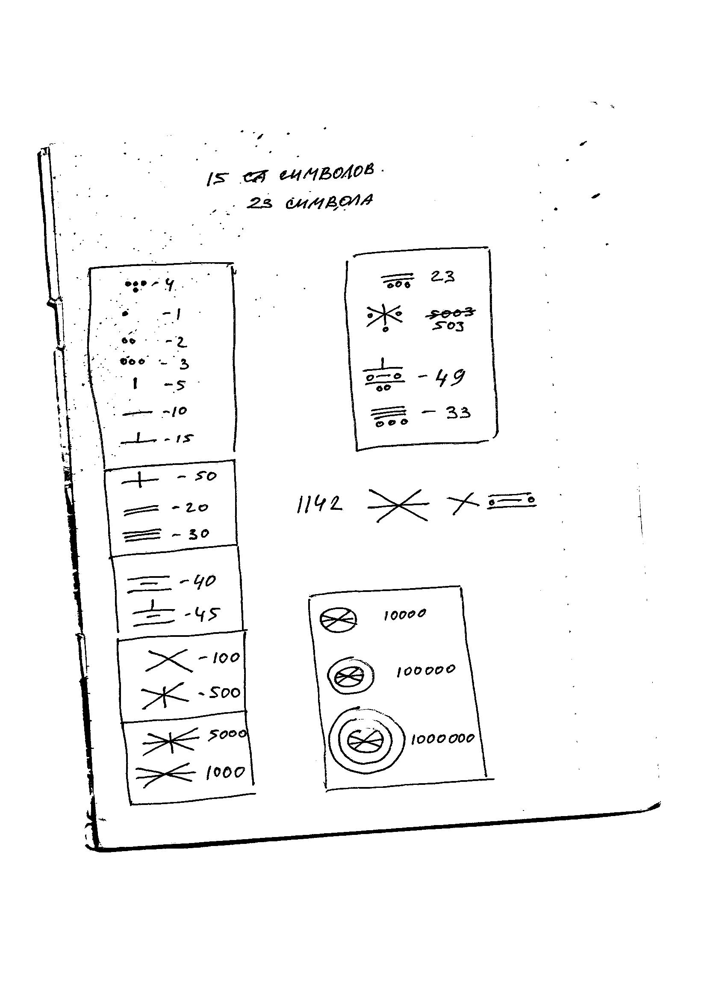
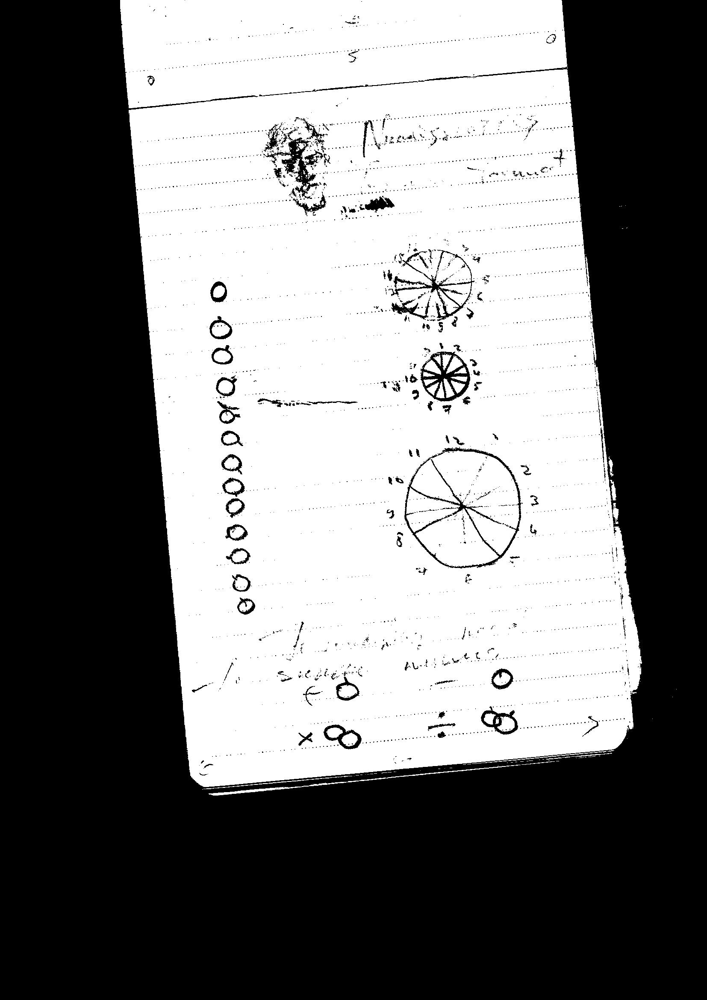

Date: 28 September 2016

Language & Numeral systems

Date: 12 June 2019
Date: 28 September 2016
Language & Numeral systems
Date: 12 June 2019
I think that human needs to create something new always. Whenever numbers and language, we may change it. It gives us possibilities to think more.
I think many people in childhood create their language with friends. It is will be simple game but why we do it. It is nice way to self-realization. I know that in some countries you may create your own church and create culture. It is great and it do us better.
My idea is not to have money or make something better than it could be. It is studying and creating, I try to live like small child because they have every time positive thinking and in the main – a lot of curiosity.
I create about five numeral systems for different doings and use it all the time. This is not a perfect one, they all connected to sense, that coming from Maia, Egypt, Aztecs, Greek, Rome, China and a lot of more that I study and research.
I contain this knowledge and make from them something new. I try not to copy something, I try to find and collect meaning.
The last numeral system is circles. It is 12 types of circles. Circle without something – zero. After they similar to o’clock. If number 1 there are dot in place where 1 at o’clock.
It is not all; I make from it different in plus, minus, divide and multiply. There are no sign, its place regard another symbol. If you want to make minus number – dot in the circle; you want make plus, dot abroad circle; multiply is circle in circle; divide is circle separated another circle.
I in a point of view Jaques Fresco about languages. It is great to talk like melody and sing to said something. I think that it is too difficult to talk every time.
At all, I think that I cannot do it and propagate it. If someone want to learn it, I said and I really be happy if someone see from my point of view. Nevertheless, I do not understand this kind of marketing, where you come everywhere and try to recruit someone. If someone want to know I said, if do not want I talk about something more interesting to person.
I wish that someone see it and find this enthusiastic. It is only my curiousity stream.
There are description of my used systems